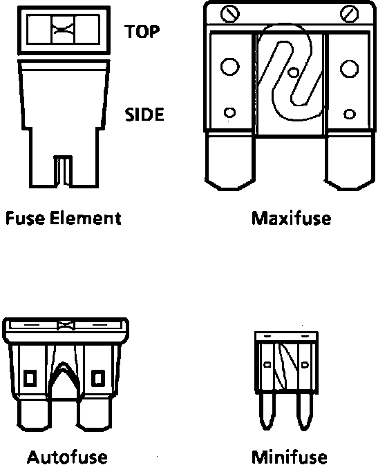
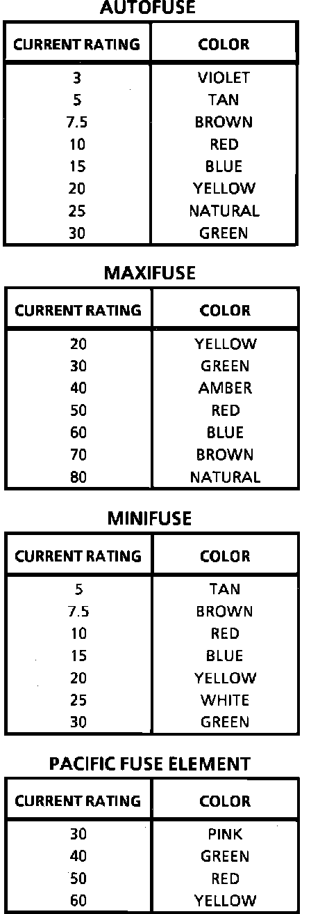
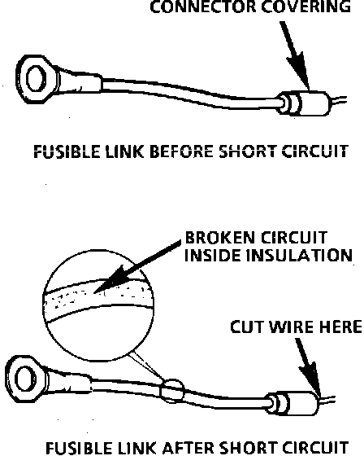
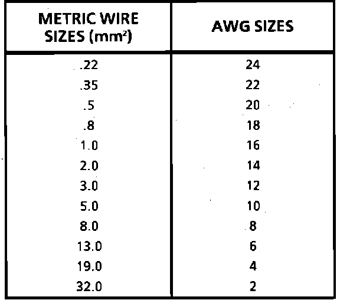
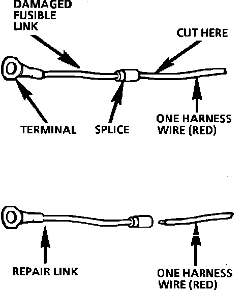
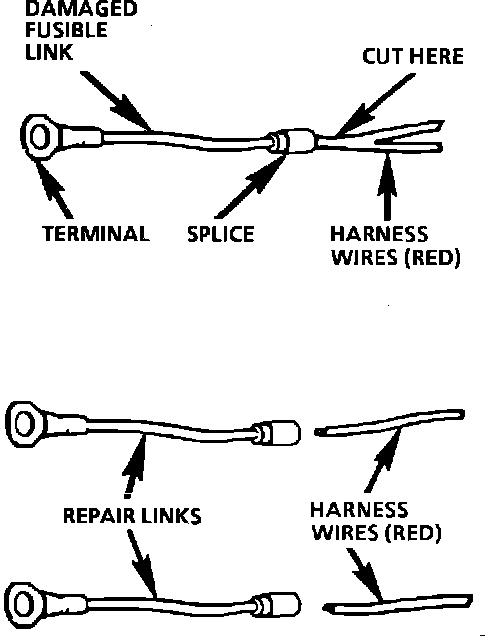

Circuit Protection Devices
PURPOSEThe purpose of circuit protection is to protect the wiring assembly during normal and overload conditions. An overload is defined as a current requirement that is higher than normal. This overload could be caused by a short circuit or system malfunction. The short circuit could be the result of a pinched or cut wire or an internal device short circuit, such as an electronic module failure.
The circuit protection device is only applied to protect the wiring assembly, and not the electrical load at the end of the assembly. For example, if an electronic component short circuits, the circuit protection device will assure a minimal amount of damage to the wiring assembly. However, it will not necessarily prevent damage to the component.
CIRCUIT PROTECTION DEVICES
There are three basic types of circuit protection devices: Circuit Breaker, Fuse and Fusible Link.
CIRCUIT BREAKERS
A circuit breaker is a protective device designed to open the circuit when a current load is in excess of rated breaker capacity. If there is a short or other type of overload condition in the circuit, the excessive current will open the circuit between the circuit breaker terminals. There are two basic types of circuit breakers used in this vehicle: cycling and non-cycling.
Cycling Circuit Breaker
The cycling breaker will open due to heat generated when excessive current passes through it for a period of time. Once the circuit breaker cools, it will close again after a few seconds. If the cause of the high current is still present it will open again. It will continue to cycle open and closed until the condition causing the high current is removed.
Non-Cycling Circuit Breaker
There are two types of non-cycling circuit breakers. One type is mechanical and is nearly the same as a cycling breaker. The difference is a small heater wire within the non-cycling circuit breaker. This wire provides enough heat to keep the bimetallic element open until the current source is removed. The other type is solid state, known as an Electronic Circuit Breaker (ECB). This device has a Positive Temperature Coefficient. It increases its resistance greatly when excessive current passes through it. The excessive current heats the ECB. As it heats, its resistance increases, therefore having a Positive Temperature Coefficient. Eventually the resistance gets so high that the circuit is effectively open. The EC13 will not reset until the circuit is opened, removing voltage from its terminals. Once voltage is removed, the circuit breaker will re-close within a second or two.
Fig. 1 Fuse Devices:

Fig. 2 Fuse Rating and Color:

FUSES
The most common method of automotive wiring circuit protection is the fuse, Fig. 1. A fuse is a device that, by the melting of its element, opens an electrical circuit when the current exceeds a given level for a sufficient time. The action is non-reversible and the fuse must be replaced each time a circuit is overloaded or after a malfunction is repaired. Fuses are color coded. The standardized color identification and ratings are shown in Fig. 2. For service replacement, non-color coded fuses of the same respective current rating can be used. Examine a suspect fuse for a break in the element. If the element is broken or melted, replace the fuse with one of equal current rating. There are additional specific circuits with in-line fuses. These fuses are located within the individual wiring harness and will appear to be an open circuit if blown.
Autofuse
The Autofuse, normally referred to simply as "Fuse," is the most common circuit protection device in today's vehicle. The Autofuse is most often used to protect the wiring assembly between the Fuse Block and the system components.
Maxifuse
The Maxifuse was designed to replace the fusible link and Pacific Fuse Elements. The Maxifuse is designed to protect cables, normally between the Battery and Fuse Block, from both direct short circuits and resistive short circuits. Compared to a fusible link or a Pacific Fuse Element, the Maxifuse performs much more like an Autofuse, although the average opening time is slightly longer. This is because the Maxifuse was designed to be a slower blowing fuse, with less chance of nuisance blows.
Minifuse
The Minifuse is a smaller version of the Autofuse and has a similar performance. As with the Autofuse, the Minifuse is usually used to protect the wiring assembly between a Fuse Block and system components. Since the Minifuse is a smaller device, it allows for more system specific fusing to be accomplished within the same amount of space as Autofuses.
Pacific Fuse Element
The Pacific Fuse Element was developed to be a replacement for the fusible link. Like a fusible link, the fuse element is designed to protect wiring from a direct short to ground. Though the element is easier to service and inspect than a fusible link, it has limited use and will be replaced by Maxifuses in future vehicles.
Fig. 3 Good and Damaged Fusible Links:

Fig. 6 Wire Size Conversion Table:

FUSIBLE LINKS
In addition to circuit breakers and fuses, some circuits use fusible links to protect the wiring. Like fuses, fusible links are "one-time" protection devices that will melt and create an open circuit, Fig. 3. Not all fusible link open circuits can be detected by observation. Always inspect that there is battery voltage past the fusible link to verify continuity.
Fusible links are used instead of a fuse in wiring circuits that are not normally fused, such as the ignition circuit. For AWG sizes, each fusible link is four wire gage sizes smaller than the wire it is designed to protect. For example: to protect a 10 gage wire use a 14 gage link or for metric, to protect a 5 sq mm wire use a 2 sq mm link, Fig. 6. Links are marked on the insulation with wire gage size because the heavy insulation makes the link appear to be a heavier gage than it actually is. The same wire size fusible link must be used when replacing a blown fusible link.
Fusible links are available with three types of insulation: Hypalon(R), Silicone/GXL (SIL/GXL) and Expanded Duty. All future vehicles that use fusible links will utilize the Expanded Duty type of fusible link. When servicing fusible links, all fusible links can be replaced with the Expanded Duty type. SIL/GXI fusible links can be used to replace either SIL/GXI or Hypalon(R) fusible links. Hypalon(R) fusible links can only be used to replace Hypalon(R) fusible links.
Determining characteristics of the types of fusible links:
^ Hypalon(R) (limited use): only available in .35 sq mm or smaller and its insulation is one color all the way through.
^ SIL/GXL (widely used): available in all sizes and has a white inner core under the outer color of insulation.
^ Expanded Duty: available in all sizes, has an insulation that is one color all the way through and has three dots following the writing on the insulation.
Service fusible links are available in many lengths. Choose the shortest length that is suitable. If the fusible link is to be cut from a spool, it should be cut 150-225 mm (approx 6-9 in.) long.
NEVER make a fusible link longer than 225 mm (approx 9 in.).
CAUTION: Fusible links cut longer than 225 mm (approx 9 in.) will not provide sufficient overload protection.
Fig. 4 Single Wire Feed Fusible Link:

Fig. 5 Double Wire Feed Fusible Link:

SERVICE PROCEDURE
- To replace a damaged fusible link, Fig. 4, cut it off beyond the splice. Replace with a repair link. When connecting the repair link, strip wire and use staking-type pliers to crimp the splice securely in two places. For more details on splicing procedures, see SPLICING COPPER WIRE. Use Crimp and Seal splices whenever possible.
- To replace a damaged fusible link which feeds two harness wires, cut them both off beyond the splice. Use two repair links, one spliced to each harness wire, Fig. 5.